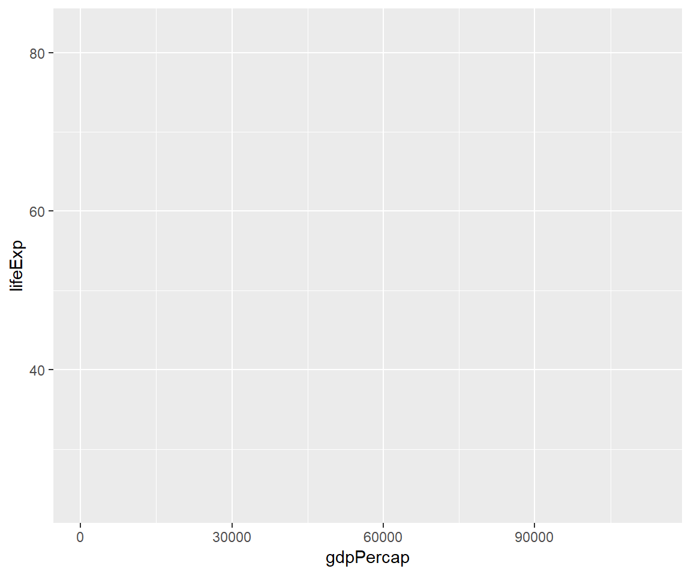
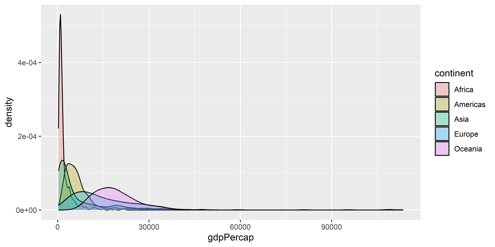
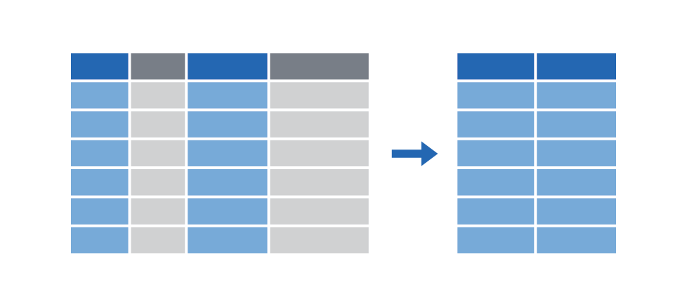

Analítica de Datos
ggplot y tidyverse
Plan para hoy
tidy data
Qué es “tidy” data?
- Recursos:
- Paquete tidyr
- Paper original (Hadley Wickham, 2014 JSS)
- Puntos clave:
- Cada variable forma una columna.
- Cada observación forma una fila.
- Cada tipo de unidad de observación forma una tabla.
ggplot
El paquete ggplot
El paquete ggplot2 creado por Hadley Wickham es uno de los paquetes más populares de todo el mundo R.
- Está construido sobre una teoría de visualización profunda: i.e. The Grammar of Graphics de Leland Wilkinson.
Elements of ggplot2
Hay mucho que decir sobre la implementación de este enfoque de “gramática de gráficos” en ggplot2, pero los tres elementos clave son:
La gráfica (“la visualización”) está conectada a las variables (“los datos”) a través de varios mapeos estéticos (aestethic mappings).
Una vez el mapeo estético está definido, ustedes pueden representar sus datos en diferentes maneras al elegir diferentes geoms (i.e. “objetos geométricos” como puntos, líneas o barras).
Los gráficos se contruyen por capas (layers).
Esto es un poco abstracto. Repasemos cada elemento por turno con algunos gráficos reales.
Gapminder Data
1. Mapeo estético

1. Mapeo estético (cont.)
Concentrémonos en la primera línea que contiene el llamado a la función ggplot(). La función acepta varios argumentos incluyendo:
- los datos que estamos usando (i.e.
data = top1000). - el mapeo estético (i.e.
mapping = aes(x = budget, y = rating)).
El mapeo estético acá es simple: sólo define un eje x (budget) y un eje y (rating).
- Sin embargo, para tener una idea del poder y la flexibilidad que conlleva este enfoque, consideremos lo que sucede si agregamos más estética a la línea de la función…
1. Mapeo estético (cont.)
Noten que borramos la parte “mapping =” al llamar la función. La mayoría de la gnete sólo empieza con “aes(…)”, ya que ggplot2 sabe el orden de los argumentos.
1. Mapeo estético (cont.)
También podemos especificar mapeo estético en la capa de la geometríca que queremos.
1. Mapeo estético (cont.)
Oops. ¿Qué salió mal aquí?
Respuesta: Las características estéticas están asociadas a variables, no a descripciones!
1. Mapeo estético (cont.)
En este punto, en lugar de repetir la misma primera línea de ggplot2, es más conveniente definir un gráfico intermedio que podamos reutilizar.
2. Geoms
Una vez que las relaciones de sus variables hayan sido definidas por los mapeos estéticos, pueden usar y combinar diferentes geometrías para generar diferentes visualizaciones.
2. Geoms
Los mapeos estéticos pueden aplicarse de manera diferente en cada geometría.

2. Geoms (cont)
El gráfico anterior proporciona una buena ilustración del poder (o efecto) que surge de asignar mapeos estéticos “globalmente” vs al interior de las capas geométricas individuales.
- Comparar: ¿Qué sucede si ejecuta el fragmento de código a continuación?
2. Geoms (cont)
De manera similar, tenga en cuenta que algunos geoms solo aceptan un subconjunto de asignaciones. Por ejemplo, geom_density() no sabe qué hacer con la asignación estética “y”.
2. Geoms (cont)
Podemos solucionar esto siendo más cuidadosos con cómo construimos la gráfica.
3. Construir la gráfica por capas
Ya hemos visto cómo podemos encadenar (o “superponer”) elementos de gráfico consecutivos utilizando el conector “+”.
- El hecho de que podamos crear y luego reutilizar un objeto de gráfico intermedio (por ejemplo, “p”) es un testimonio de esto.
Pero vale la pena repetirlo: puede generar una complejidad y transformación realmente impresionantes de su visualización a través de este simple proceso de superposición. - No tiene que transformar sus datos originales; ggplot2 se encarga de todo eso. - Por ejemplo (vea la siguiente diapositiva para ver la figura).
3. Construir la gráfica por capas (cont)
3. Construir la gráfica por capas (cont)

3. Construir la gráfica por capas (cont)
3. Construir la gráfica por capas (cont)
p +
geom_point(aes(size = pop, col = continent), alpha = 0.3) +
scale_color_brewer(name = "Continent", palette = "Set1") + ## Different colour scale
scale_size(name = "Population", labels = scales::comma) + ## Different point (i.e. legend) scale
scale_x_log10(labels = scales::dollar) ## Switch to logarithmic scale on x-axis. Use dollar units.3. Construir la gráfica por capas (cont)
p +
geom_point(aes(size = pop, col = continent), alpha = 0.3) +
scale_color_brewer(name = "Continent", palette = "Set1") + ## Different colour scale
scale_size(name = "Population", labels = scales::comma) + ## Different point (i.e. legend) scale
scale_x_log10(labels = scales::dollar) + ## Switch to logarithmic scale on x-axis. Use dollar units.
labs(x = "Log (GDP per capita)", y = "Life Expectancy") ## Better axis titles
3. Construir la gráfica por capas (cont)
p +
geom_point(aes(size = pop, col = continent), alpha = 0.3) +
scale_color_brewer(name = "Continent", palette = "Set1") + ## Different colour scale
scale_size(name = "Population", labels = scales::comma) + ## Different point (i.e. legend) scale
scale_x_log10(labels = scales::dollar) + ## Switch to logarithmic scale on x-axis. Use dollar units.
labs(x = "Log (GDP per capita)", y = "Life Expectancy") + ## Better axis titles
theme_minimal() ## Try a minimal (b&w) plot theme3. Construir la gráfica por capas (cont)
dplyr

Símbolos Lógicos
| Test | Meaning | Test | Meaning |
|---|---|---|---|
x < y |
Less than | x %in% y |
In (group membership) |
x > y |
Greater than | is.na(x) |
Is missing |
== |
Equal to | !is.na(x) |
Is not missing |
x <= y |
Less than or equal to | ||
x >= y |
Greater than or equal to | ||
x != y |
Not equal to |
Los verbos del dlpyr
Extraer filas con filter() |
 |
Extraer columnas con select() |
 |
Ordenar filas con arrange() |
 |
Crea nuevas columnas con mutate() |
 |
Resumir variables por grupo con group_by() |> summarize() |
 |
La sintaxis común
VERB(DATA, …)
- VERB = función/verbo de dplyr
- DATA = los datos a transformar
- … = la operación que haga el verbo
1) dplyr::filter
filter(data = DATA, …)
- DATA = los datos a transformar
- … = Una o más condiciones.
filter()selecciona cada fila para cual la condición es verdadera
1) dplyr::filter
Podemos encadenar múltiples comandos de filtro con el pipe (), o simplemente separarlos dentro de un solo comando de filtro usando comas.
# A tibble: 4 x 14
name height mass hair_color skin_color eye_color birth_year sex gender
<chr> <int> <dbl> <chr> <chr> <chr> <dbl> <chr> <chr>
1 Darth Va~ 202 136 none white yellow 41.9 male mascu~
2 Qui-Gon ~ 193 89 brown fair blue 92 male mascu~
3 Dooku 193 80 white fair brown 102 male mascu~
4 Bail Pre~ 191 NA black tan brown 67 male mascu~
# i 5 more variables: homeworld <chr>, species <chr>, films <list>,
# vehicles <list>, starships <list>Otros operadores lógidos
a & b significa a y b
# A tibble: 4 x 3
name species height
<chr> <chr> <int>
1 Darth Vader Human 202
2 Qui-Gon Jinn Human 193
3 Dooku Human 193
4 Bail Prestor Organa Human 191a | b significa a o b
# A tibble: 54 x 3
name species height
<chr> <chr> <int>
1 Luke Skywalker Human 172
2 Darth Vader Human 202
3 Leia Organa Human 150
4 Owen Lars Human 178
5 Beru Whitesun Lars Human 165
6 Biggs Darklighter Human 183
7 Obi-Wan Kenobi Human 182
8 Anakin Skywalker Human 188
9 Wilhuff Tarkin Human 180
10 Chewbacca Wookiee 228
# i 44 more rows1) dplyr::filter cont.
Las expresiones regulares también funcionan dentro del comando.
# A tibble: 3 x 14
name height mass hair_color skin_color eye_color birth_year sex gender
<chr> <int> <dbl> <chr> <chr> <chr> <dbl> <chr> <chr>
1 Luke Sky~ 172 77 blond fair blue 19 male mascu~
2 Anakin S~ 188 84 blond fair blue 41.9 male mascu~
3 Shmi Sky~ 163 NA black fair brown 72 fema~ femin~
# i 5 more variables: homeworld <chr>, species <chr>, films <list>,
# vehicles <list>, starships <list>1) dplyr::filter cont.
Un uso muy común de filter es identificar (o eliminar) casos con valores faltantes (missings).
# A tibble: 6 x 14
name height mass hair_color skin_color eye_color birth_year sex gender
<chr> <int> <dbl> <chr> <chr> <chr> <dbl> <chr> <chr>
1 Arvel Cr~ NA NA brown fair brown NA male mascu~
2 Finn NA NA black dark dark NA male mascu~
3 Rey NA NA brown light hazel NA fema~ femin~
4 Poe Dame~ NA NA brown light brown NA male mascu~
5 BB8 NA NA none none black NA none mascu~
6 Captain ~ NA NA none none unknown NA fema~ femin~
# i 5 more variables: homeworld <chr>, species <chr>, films <list>,
# vehicles <list>, starships <list>Para eliminar valores faltantes, simplemente usen la negación: filter(!is.na(height)). Inténtenlo ustedes.
Errores comunes
Dos de los errores más comunes son:
- Usar “=” en vez de “==”
- No usar las comillas cuando las variables son de tipo texto
Incorrecto
filter(starwars,
species = “Human”)
filter(starwars,
species == Human)
Correcto
filter(starwars,
species == “Human”)
filter(starwars,
species == “Human”)
Errores comunes
Otros errores comunes son:
- Tratar de agregar las condiciones sin comas o conectores lógidos
- Usar las comas cuando se pueden usar los conectores lógicos
Incorrecto
filter(starwars,
170 < height < 190 )
filter(starwars,
name = “Anakin Skywalker”, name = “Rey”, name = “Finn” )
Correcto
filter(starwars,
height > 170, height < 190)
filter(starwars,
name %in% c(“Anakin Skywalker”, “Rey”, “Finn”) )
2) dplyr::arrange
# A tibble: 87 x 14
name height mass hair_color skin_color eye_color birth_year sex gender
<chr> <int> <dbl> <chr> <chr> <chr> <dbl> <chr> <chr>
1 Wicket ~ 88 20 brown brown brown 8 male mascu~
2 IG-88 200 140 none metal red 15 none mascu~
3 Luke Sk~ 172 77 blond fair blue 19 male mascu~
4 Leia Or~ 150 49 brown light brown 19 fema~ femin~
5 Wedge A~ 170 77 brown fair hazel 21 male mascu~
6 Plo Koon 188 80 none orange black 22 male mascu~
7 Biggs D~ 183 84 black light brown 24 male mascu~
8 Han Solo 180 80 brown fair brown 29 male mascu~
9 Lando C~ 177 79 black dark brown 31 male mascu~
10 Boba Fe~ 183 78.2 black fair brown 31.5 male mascu~
# i 77 more rows
# i 5 more variables: homeworld <chr>, species <chr>, films <list>,
# vehicles <list>, starships <list>
Nota: Si se organiza una variable basado en caracteres, se ordenarán alfabéticamente. Intenten ordenando según la variable “name”.
2) dplyr::arrange cont.
También podemos organizar los elementos en orden descendente utilizando arrange(desc()).
# A tibble: 87 x 14
name height mass hair_color skin_color eye_color birth_year sex gender
<chr> <int> <dbl> <chr> <chr> <chr> <dbl> <chr> <chr>
1 Yoda 66 17 white green brown 896 male mascu~
2 Jabba D~ 175 1358 <NA> green-tan~ orange 600 herm~ mascu~
3 Chewbac~ 228 112 brown unknown blue 200 male mascu~
4 C-3PO 167 75 <NA> gold yellow 112 none mascu~
5 Dooku 193 80 white fair brown 102 male mascu~
6 Qui-Gon~ 193 89 brown fair blue 92 male mascu~
7 Ki-Adi-~ 198 82 white pale yellow 92 male mascu~
8 Finis V~ 170 NA blond fair blue 91 male mascu~
9 Palpati~ 170 75 grey pale yellow 82 male mascu~
10 Cliegg ~ 183 NA brown fair blue 82 male mascu~
# i 77 more rows
# i 5 more variables: homeworld <chr>, species <chr>, films <list>,
# vehicles <list>, starships <list>3) dplyr::select
Utilicen comas para seleccionar varias columnas de una base de datos (usen “first:last” para columnas consecutivas). Anulen la selección de una columna con “-”.
# A tibble: 87 x 5
name mass hair_color skin_color species
<chr> <dbl> <chr> <chr> <chr>
1 Luke Skywalker 77 blond fair Human
2 C-3PO 75 <NA> gold Droid
3 R2-D2 32 <NA> white, blue Droid
4 Darth Vader 136 none white Human
5 Leia Organa 49 brown light Human
6 Owen Lars 120 brown, grey light Human
7 Beru Whitesun Lars 75 brown light Human
8 R5-D4 32 <NA> white, red Droid
9 Biggs Darklighter 84 black light Human
10 Obi-Wan Kenobi 77 auburn, white fair Human
# i 77 more rows3) dplyr::select cont.
También puede cambiar el nombre de algunas (o todas) de las variables seleccionadas.
# A tibble: 87 x 3
alias crib sex
<chr> <chr> <chr>
1 Luke Skywalker Tatooine masculine
2 C-3PO Tatooine masculine
3 R2-D2 Naboo masculine
4 Darth Vader Tatooine masculine
5 Leia Organa Alderaan feminine
6 Owen Lars Tatooine masculine
7 Beru Whitesun Lars Tatooine feminine
8 R5-D4 Tatooine masculine
9 Biggs Darklighter Tatooine masculine
10 Obi-Wan Kenobi Stewjon masculine
# i 77 more rowsSi solo desean cambiar el nombre de las columnas sin seleccionarlas, pueden utilizar. rename. Prueben esto ahora reemplazando select(...) en el fragmento de código anterior por rename(...).
3) dplyr::select cont.
La opción select(contains(PATTERN)) proporciona un buen atajo en casos relevantes.
# A tibble: 87 x 4
name hair_color skin_color eye_color
<chr> <chr> <chr> <chr>
1 Luke Skywalker blond fair blue
2 C-3PO <NA> gold yellow
3 R2-D2 <NA> white, blue red
4 Darth Vader none white yellow
5 Leia Organa brown light brown
6 Owen Lars brown, grey light blue
7 Beru Whitesun Lars brown light blue
8 R5-D4 <NA> white, red red
9 Biggs Darklighter black light brown
10 Obi-Wan Kenobi auburn, white fair blue-gray
# i 77 more rows3) dplyr::select cont.
La opción select(..., everything()) es otro atajo útil si solo desea traer algunas variables al “frente” de la base de datos.
# A tibble: 5 x 14
species homeworld name height mass hair_color skin_color eye_color
<chr> <chr> <chr> <int> <dbl> <chr> <chr> <chr>
1 Human Tatooine Luke Skywalker 172 77 blond fair blue
2 Droid Tatooine C-3PO 167 75 <NA> gold yellow
3 Droid Naboo R2-D2 96 32 <NA> white, blue red
4 Human Tatooine Darth Vader 202 136 none white yellow
5 Human Alderaan Leia Organa 150 49 brown light brown
# i 6 more variables: birth_year <dbl>, sex <chr>, gender <chr>, films <list>,
# vehicles <list>, starships <list>4) dplyr::mutate
Pueden crear nuevas columnas desde cero o (más comúnmente) como transformaciones de columnas existentes.
starwars |>
select(name, birth_year) |>
mutate(dog_years = birth_year * 7) |>
mutate(comment = paste0(name, " is ", dog_years, " in dog years."))# A tibble: 87 x 4
name birth_year dog_years comment
<chr> <dbl> <dbl> <chr>
1 Luke Skywalker 19 133 Luke Skywalker is 133 in dog years.
2 C-3PO 112 784 C-3PO is 784 in dog years.
3 R2-D2 33 231 R2-D2 is 231 in dog years.
4 Darth Vader 41.9 293. Darth Vader is 293.3 in dog years.
5 Leia Organa 19 133 Leia Organa is 133 in dog years.
6 Owen Lars 52 364 Owen Lars is 364 in dog years.
7 Beru Whitesun Lars 47 329 Beru Whitesun Lars is 329 in dog yea~
8 R5-D4 NA NA R5-D4 is NA in dog years.
9 Biggs Darklighter 24 168 Biggs Darklighter is 168 in dog year~
10 Obi-Wan Kenobi 57 399 Obi-Wan Kenobi is 399 in dog years.
# i 77 more rows4) dplyr::mutate cont.
Nota: mutate tiene en cuenta el orden, por lo que puedes encadenar múltiples cambios en un sólo uso del comando.
starwars |>
select(name, birth_year) |>
mutate(
dog_years = birth_year * 7, ## Separate with a comma
comment = paste0(name, " is ", dog_years, " in dog years.")
)# A tibble: 87 x 4
name birth_year dog_years comment
<chr> <dbl> <dbl> <chr>
1 Luke Skywalker 19 133 Luke Skywalker is 133 in dog years.
2 C-3PO 112 784 C-3PO is 784 in dog years.
3 R2-D2 33 231 R2-D2 is 231 in dog years.
4 Darth Vader 41.9 293. Darth Vader is 293.3 in dog years.
5 Leia Organa 19 133 Leia Organa is 133 in dog years.
6 Owen Lars 52 364 Owen Lars is 364 in dog years.
7 Beru Whitesun Lars 47 329 Beru Whitesun Lars is 329 in dog yea~
8 R5-D4 NA NA R5-D4 is NA in dog years.
9 Biggs Darklighter 24 168 Biggs Darklighter is 168 in dog year~
10 Obi-Wan Kenobi 57 399 Obi-Wan Kenobi is 399 in dog years.
# i 77 more rowsifelse
ifelse(TEST, VALUE_IF_TRUE, VALUE_IF_FALSE)
- TEST = Una condición lógica
- VALUE_IF_TRUE = Lo que pasa si la condición se cumple
- VALUE_IF_FALSE = Lo que pasa si la condición no se cumple
4) dplyr::mutate cont.
Los operadores lógicos y condicionales también funcionan bien con mutate.
starwars |>
select(name, height) |>
filter(name %in% c("Luke Skywalker", "Anakin Skywalker")) |>
mutate(tall1 = height > 180) |>
mutate(tall2 = ifelse(height > 180, "Tall", "Short")) ## Same effect, but can choose labels# A tibble: 2 x 4
name height tall1 tall2
<chr> <int> <lgl> <chr>
1 Luke Skywalker 172 FALSE Short
2 Anakin Skywalker 188 TRUE Tall 4) dplyr::mutate cont.
Por último, la combinación de mutate con la función across les permite trabajar fácilmente en un subconjunto de variables. Por ejemplo:
# A tibble: 5 x 6
name height mass hair_color skin_color eye_color
<chr> <int> <dbl> <chr> <chr> <chr>
1 LUKE SKYWALKER 172 77 BLOND FAIR BLUE
2 C-3PO 167 75 <NA> GOLD YELLOW
3 R2-D2 96 32 <NA> WHITE, BLUE RED
4 DARTH VADER 202 136 NONE WHITE YELLOW
5 LEIA ORGANA 150 49 BROWN LIGHT BROWN 5) dplyr::summarise
Particularmente útil en combinación con el comando group_by.
# A tibble: 42 x 3
# Groups: species [38]
species gender mean_height
<chr> <chr> <dbl>
1 Aleena masculine 79
2 Besalisk masculine 198
3 Cerean masculine 198
4 Chagrian masculine 196
5 Clawdite feminine 168
6 Droid feminine 96
7 Droid masculine 140
8 Dug masculine 112
9 Ewok masculine 88
10 Geonosian masculine 183
# i 32 more rows5) dplyr::summarise cont.
Tengan en cuenta que incluir “na.rm = TRUE” (o su alias “na.rm = T”) suele ser una buena idea con estas funcioes. De lo contrario, cualquier valor faltante se propagará también al valor resumido.
5) dplyr::summarise cont.
El mismo flujo de trabajo basado en across que vimos con mutate unas diapositivas atrás también funciona con summarise. Por ejemplo:
Otros verbos del dplys
slice: Selecciona filas por posición en lugar de filtrar por valores.
- Por ejemplo:
starwars %>% slice(c(1, 5))
pull: Extrae una columna de un data frame como un vector o un escalar.
- Por ejemplo:
starwars %>% filter(gender=="female") %>% pull(height)
count y distinct: Cuenta y aísla observaciones únicas.
- Por ejemplo:
starwars %>% count(species)ostarwars %>% distinct(species) - También se puede usar una combinación de
mutate,group_byyn(), por ejemplo:starwars %>% group_by(species) %>% mutate(num = n()).